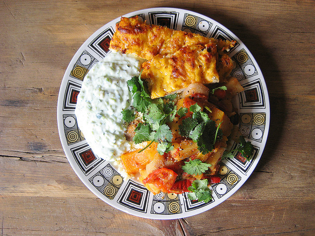
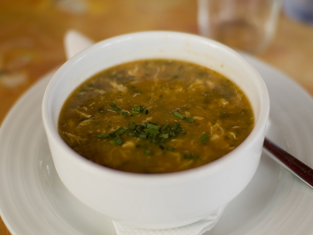

Les plats typiques du Maghreb
L’ojja tunisienne
Je ne sais pas vous, L’ojja tunisienne est un plat de merguez et d’œufs, lié par une savoureuse sauce tomate. Rapide et facile à réaliser, l’ojja tunisienne est une recette expresse parfaite pour les débutants en cuisine. Il est possible de l’accompagner de semoule ou de pâtes pour un repas équilibré. Mais traditionnellement, elle se déguste avec du pain. Essayez-la, vous allez à coup sûr régaler les papilles des petits comme des plus grands

Tajine
Alors oui, Tajine désigne aussi bien le contenu que le contenant, aussi bien le plat que la recette. Tellement de sortes de tajines différents qu'il aurait fallu en faire un top à lui tout seul.
Harira
Une soupe très riche pour tenir toute une journée
Couscous Tunsien
En Tunisie, ce vrai couscous traditionnel bien piquant en sauce rouge est facile dans sa préparation avec des légumes,

Artichauts farcis à la Marocaine
Fonds d'artichauts farcis à la viande hachée, avec petits pois et champignons à la marocaine. Un plat familial pour toutes les occasions !